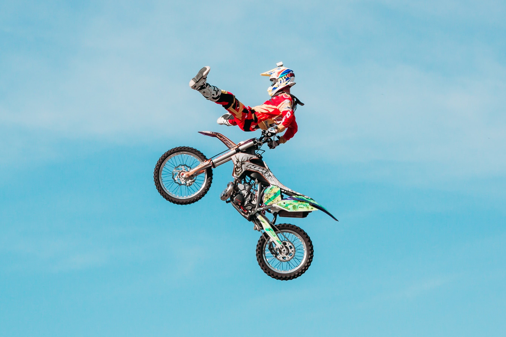
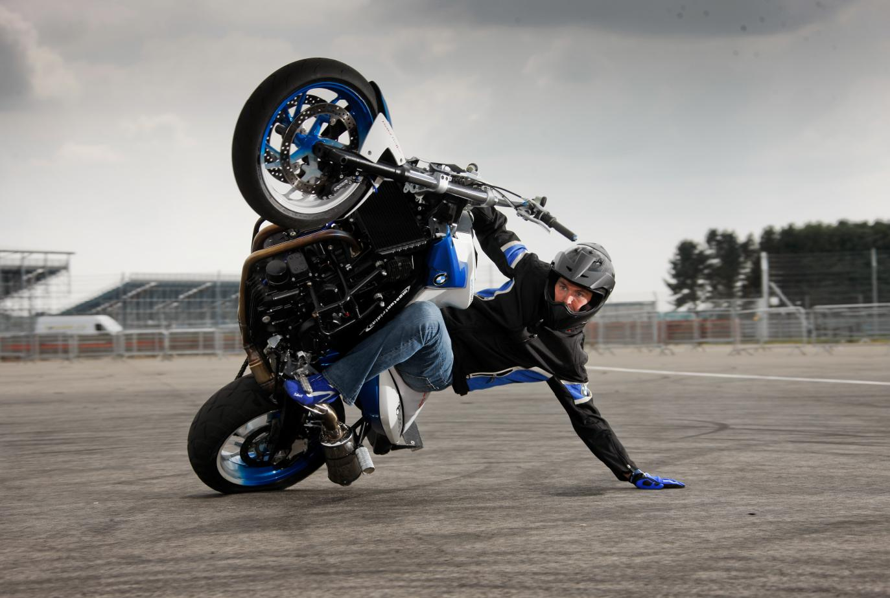
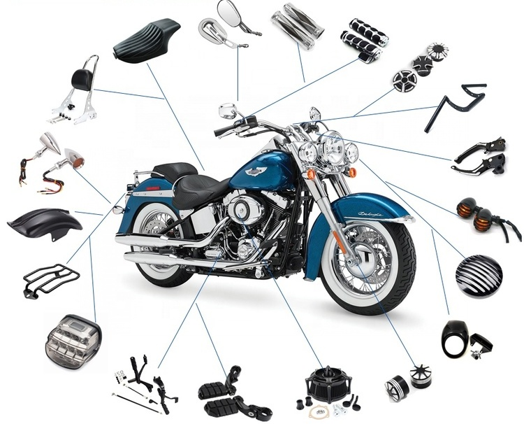
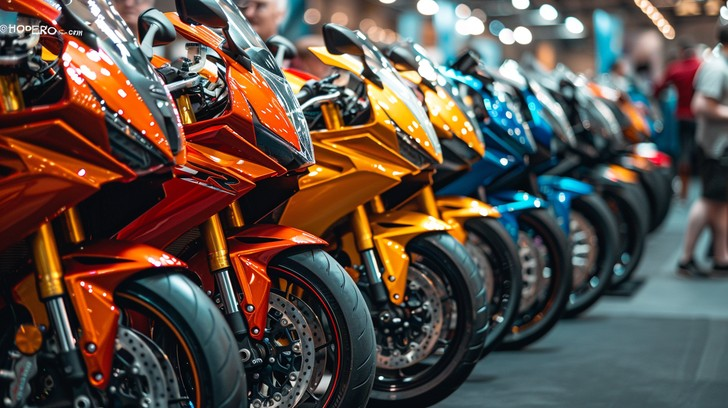

🏍 My Videos 🏍
Track Video
Here is a clip of a standard MotoGP race! It really emphasizes the track layout, the incredible speed of the motorcycles, and just how competitive these racers become once the flag signals the start of the race. Each racer must have serious control, precise turns, and be able to still find opportunities to overtake their competitors. It also shows how much skill, concentration, and confidence are required to compete at such a high level. No racers ever the same!
My Music
A song that gives 2000s throwback vibes which is very popular for riders to listen to. It holds an upbeat vibe to give riders an extra pump of adrenaline and excitement, more than the motorcycle already gives them.
My Pictures
These pictures show just the surface of the motorcycle world. There are various types of riders, including stunters, racers, and everyday commuters, along with countless motorcycle brands, styles, and parts. Each motorcycle has it's own purpose, it's own specific design and a reason to be built; there is one tailored to fit anyone's ride. There is so much more to a motorcycle than just riding them, those two or three wheels go a long way. /p>
|
 |
 |
|
 |
 |